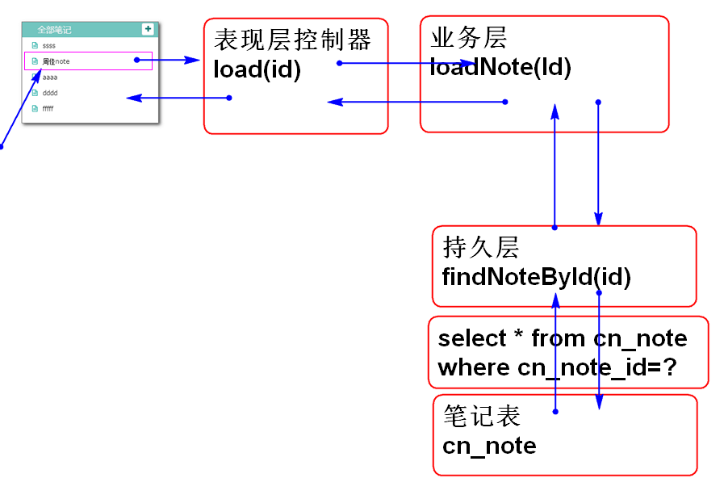
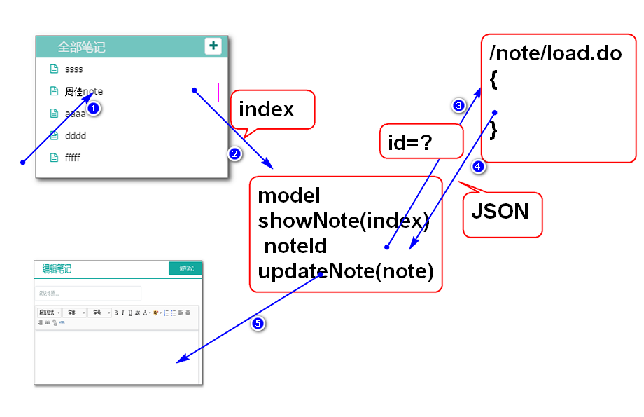
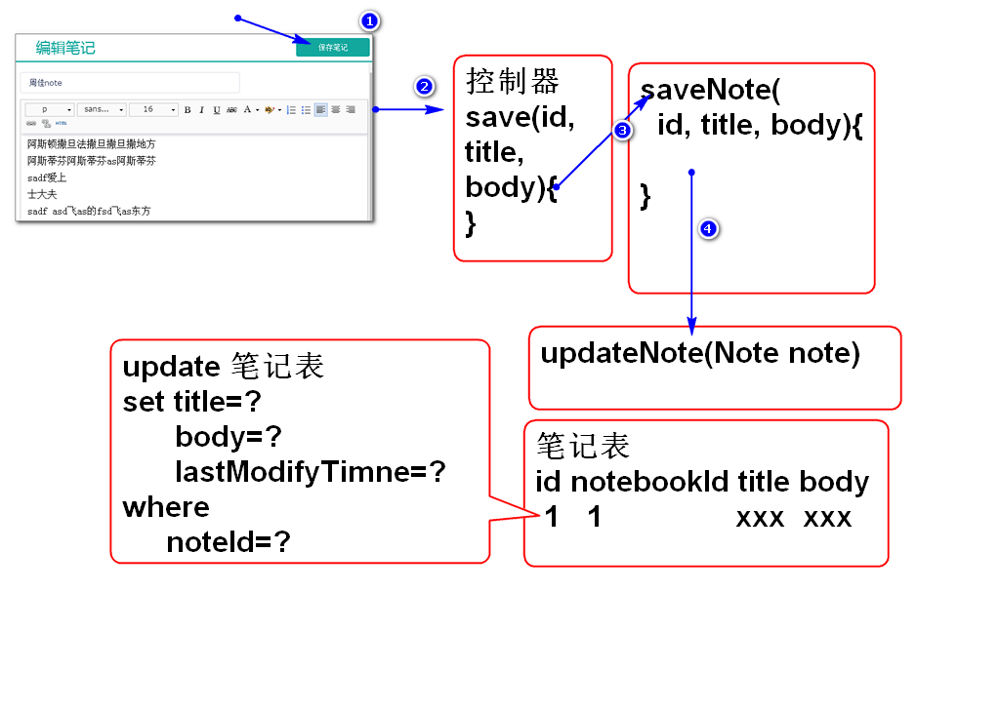

原理：

步骤：
编写数据层方法 NoteDao.java:
Note findNoteById(String id);
添加SQL语句 NoteMapper.xml:
<select id="findNoteById"
parameterType="string"
resultType="cn.tedu.note.entity.Note">
select
cn_note_id as id,
cn_notebook_id as notebookId,
cn_user_id as userId,
cn_note_status_id as statusId,
cn_note_type_id as typeId,
cn_note_title as title,
cn_note_body as body,
cn_note_create_time as createTime,
cn_note_last_modify_time as lastModifyTime
from
cn_note
where
cn_note_id=#{id}
</select>
提示：由于SQL语句比较长， 建议先利用MySQL测试，使用测试通过的SQL语句。
测试：
@Test
public void testFindNoteById(){
String id = "051538a6-0f8e-472c-8765-251a795bc88f";
NoteDao dao = ctx.getBean(
"noteDao", NoteDao.class);
Note note = dao.findNoteById(id);
System.out.println(note);
}
编写业务层方法 NoteService.java:
Note loadNote(String id)
throws NoteNotFoundException;
实现业务层 NoteServiceImpl.java:
public Note loadNote(String id)
throws NoteNotFoundException {
if(id==null||id.trim().isEmpty()){
throw new NoteNotFoundException("ID空");
}
Note note = noteDao.findNoteById(id);
if(note==null){
throw new NoteNotFoundException("id错误");
}
return note;
}
测试：
@Test
public void testLoadNote(){
String id="051538a6-0f8e-472c-8765-251a795bc88f";
NoteService noteService =
ctx.getBean("noteService",
NoteService.class);
Note note = noteService.loadNote(id);
System.out.println(note);
}
编写控制器方法 NoteController.java:
@RequestMapping("/load.do")
@ResponseBody
public JsonResult<Note> load(String id){
Note note=noteService.loadNote(id);
return new JsonResult<Note>(note);
}
测试：
http://localhost:8080/note/note/load.do?id=051538a6-0f8e-472c-8765-251a795bc88f
http://localhost:8080/note/note/load.do?id=05153
http://localhost:8080/note/note/load.do
结果 略...
原理：

绑定笔记列表的单击事件 edit_init.js:
...
//绑定笔记列表点击事件
//loadNoteAction 方法在 edit_note.js中定义
$('#notes').on('click','li',loadNoteAction);
...
编写笔记列表点击事件处理方法 edit_note.js:
//处理笔记列表点击事件
function loadNoteAction(){
//console.log('loadNoteAction');
var li = $(this);//当前对象是li
//处理显示效果
li.parent().find('a').removeClass('checked');
li.find('a').addClass('checked');
//获取选的元素的序号
var index = li.data('index');
//console.log(index);
model.loadNote(index);
}
重构 model.updateNotes 方法绑定序号index:
...
li = $(li).data('index',i);
...
为model添加loadNote方法，向服务器发起请求获取note数据：
model.loadNote = function(index){
//console.log(index);
var url = 'note/load.do';
var data={id:model.notes[index].id};
console.log(url);
console.log(data);
$.getJSON(url, data, function(result){
if(result.state==SUCCESS){
//console.log(result.data);
model.updateNote(result.data);
}else{
alert(result.message);
}
});
};
在model中添加显示笔记内容的方法:
//将note对象显示到编辑区域
model.updateNote = function(note){
this.note=note;
$('#input_note_title').val(this.note.title);
um.setContent(this.note.body);
};
其中um是 富客户端编辑器 来自edit.html 的底部，um.setContent()方法可以更新其显示内容。
原理：

步骤：